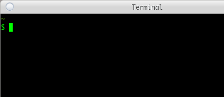

Bash 记
说和指
若让计算机理解我的意图，可以有两种方式，说和指。这与生活中我为了让他人能够理解我的意图所采用的方式相似。譬如，我想让朋友去超市帮我买瓶饮料，我可以使用祈使句，「帮我去超市买瓶可乐，如何？」我也可以把他领到超市门口，指一下超市，然后再把他领进超市，指一下饮料柜里的一瓶可乐，然后再指一下他口袋里的钱包。基于说的方式让计算机理解我的意图，就是向计算机输入一些命令，计算机则通过命令解释程序理解我的意图。基于指的方式让计算机理解我的意图，就是通过鼠标、触摸屏之类的交互设备，向计算机输入一些坐标信息，计算机则通过图形界面程序理解我的意图。
在生活中，人们通常会喜欢通过说的方式让他人理解自己的意图，只有在难以言说的时候，才会考虑用指的办法。这是因为我们已经掌握了一门与他人沟通交流所用的语言，利用这种语言让他人理解我们的意图，是成本最低的方法。但是对于计算机而言，由于大多数人通常没有机会学习计算机可以理解的语言，因此对于他们而言，采取指的方式让计算机理解他们的意图则是成本最低的方法。因为这个缘故，大多数人喜欢以图形界面交互的方式使用计算机，因为他们觉得学习一门计算机语言，成本太高。倘若将一门计算机语言列入小学课程，或许孩子们长大后与计算机的沟通便不再像现代人这样过度依赖图形界面交互方式。
图形界面与命令并不冲突。我们教孩子说话，一开始也是以指物的方式，让孩子获得了基本的语言交流能力。图形界面程序为计算机的普及作出了很大贡献，但是在这个基础上，若想让计算机更准确、高效地理解我们的意图，那么便需要学习一门计算机语言了。
计算机语言不像人类语言那样丰富。因此，不要指望我们冲着计算机喊几嗓子，或者在运行着命令解释器的终端（命令行窗口）里输入「帮我写毕业论文」这样的句子，计算机就能够充分理解我们的意图，转而毫无怨言地去工作。至少直至目前，我们的计算机尚不具备这样的功能。不过，我们可以通过付费的方式，对那些擅长计算机语言的人喊几嗓子，或者给他们发几条微信。倘若想亲历亲为，而且认为与计算机这样的机器进行交流像是在玩一种文字意义上的游戏，那么便可以从学习一种命令行解释程序入手，学习这个程序所支持的语言以及一些常用的命令。
Bash 语言
若打算学习计算机语言，不妨从 Bash 语言入手，把它作为「母语」。
Bash 是一个命令解释程序，用于执行从标准输入或文件中读取的命令。能被 Bash 理解的语言即 Bash 语言。像 Bash 这样的程序通常称为 Shell，作为计算机用户操作计算机时的基本交互界面，亦即计算机用户通过 Shell 使用操作系统内核所提供的种种功能。Bash 是众多 Shell 中的一种，但它却是流传最为广泛的 Shell。在 Windows 系统中，Windows 10 以前的版本可以通过安装 Cygwin 便可获得 Bash，而在 Windows 10 中，只需开启 WSL（Windows Subsystem for Linux）便有了 Bash。至于 Linux 和 Mac OS X 系统，Bash 则是它们的核心标配组件。Android 手机上，通过 F-Droid 安装 Termux 也能得到 Bash。
因为 Bash 几乎无处不在，而且它能够帮助我们处理许多计算机里的日常任务，所以不妨把它作为计算机世界里的母语去学习。计算机语言虽然种类繁多，但是用这些语言写的程序，通常可以作为命令在 Bash 或其他某种 Shell 环境中运行，这种做法颇类似于我们在母语的基础上学会了一些专业里的「行话」。
事实上，在熟悉了 Bash 语言以及一些常用的命令之后，经常可以发现，很多人用其他编程语言所写的那些程序实际上没必要写，因为这些程序很有可能只需要一条 Bash 命令便可以实现了。譬如，你在撰写文档的时候，有时可能会想使用直角引号「 和 」，而非 “ 和 ”，但是自己所用的中文输入法里可能并不是很方便输入 「 和 」，这时该怎么办呢？没有多少好办法，除非你对这个输入法足够了解，去修改它的码表，为键盘上的 " 键与 「 和 」 建立映射。对于 Bash 而言，如果你的文档能够表现为纯文本的格式，假设文件名为 foo.txt ，那么你大可以继续使用 “ 和 ”，只需在文档定稿后，使用 sed 命令将 “ 和 ” 替换为 「 和 」，即
$ sed -i 's/“/「/g; s/”/」/g' foo.txt
已经习惯了图形界面交互方式与计算机沟通又抗拒学习计算机语言的人可能会抬杠，「我在微软 Word 里也可以用『查找/替换』的方式来完成你这条命令所能完成的任务啊！」诚然如此，但是如果手上不止有一份文件，而是有一组文件 foo-1.txt、foo-2.txt、foo-3.txt……需要作引号替换处理呢？难道要用微软 Word 逐一打开这些文件，然后作「查找/替换」处理，再逐一保存么？倘若这样做，就相当于是计算机在使用人，而非人使用计算机。对于 sed 命令而言，将某项文本处理过程作用于多份文件与作用于一份文件并无太大区别。若对 foo-1.txt、foo-2.txt、foo-3.txt……进行引号替换，只需
$ sed -i 's/“/「/g; s/”/」/g' foo-*.txt
庄子说，「指穷于为薪。火传也，不知其尽也。」倘若将「引号替换」视为「火」，那么用微软 Word 逐一打开文件，进行引号替换处理，再将处理后的文件保存起来，这种做法就是「指穷于为薪」，即使你很敬业，很努力，但是这样去做一辈子，在 sed 看来也只是完成了它在一瞬间就能做到的事。庄子若活到现在，一定是一个善于用计算机语言编程的人。
终端
心里至少要有一团光，哪怕它很微弱，只是来自一根火柴。在这样的微光里，看到的是世界是一片寂静的混沌，至少也是全貌。我的桌子上总是有一盒火柴，作为对童年爱放野火的冬天的怀念。我取出一根火柴，让它的头部迅捷有力地擦过磷纸，小小的火焰喷射而出，引燃了它的身体。我要带着这团火焰，进入一个诡异的黑暗世界，它的名字叫终端。
终端是 Shell 的界面，人通过终端输入命令。Shell 从终端接到命令，然后理解命令，执行命令。不要忘记，Bash 是诸多 Shell 中的一种。
在这个世界里，持着光，我注意的第一个东西是「$」，它的右面是一个不断明灭的矩形块，顶部是「~」。「$」称作命令提示符。闪烁的矩形块表示可以在此输入命令。「~」是我当前所在的位置——硬盘里的某个目录，亦即当前目录或当前工作目录。实际上 ~ 不过是 Bash 对我的个人主目录给出的简写，它的全称是「/home/garfileo」。倘若我此时正处于/tmp 目录，那么$ 的顶部应当是「/tmp」。

对于终端的初始印象，你与我或许不同。若想看到我所看到的，需要在 ~/.bashrc 文件里添加
PS1="\e[0;32m\w\e[0m\n$ "
\e[0;32m 和 \e[0m 皆为 Bash 世界里的颜色值，前者表示绿色，后者表示无色；当二者之间出现 \w 时，所产生的效果是设定 \w 为绿色，但是不影响 \w 以外的字符。\w 表示当前目录。\n 表示换行。这种咒语级的代码，足以令很多人望 Bash 而生畏或生厌了。不必担心，这样的咒语并不经常需要念。
倘若我在 ~/.bashrc 文件里删除上述对 PS1 的设定，那么我对终端的初始印象应当是 $ 的顶部没有东西，左侧是「garfileo@zero ~」，右侧是那个不断明灭的矩形块。或许你会喜欢我对 PS1 所作出的上述设定，特别是在你企图在命令提示符的右侧输入很长的命令之时。
echo
倘若初次使用 Bash，也许尚不知如何向 ~/.bashrc 文件添加
PS1="\e[0;32m\w\e[0m\n$ "
不过，现在运行 Bash 的操作系统大多提供了图形界面。可以图形界面式的文件管理器里找到 .bashrc 文件，然后使用一种图形界面式的文本编辑器打开这份文件，添加上述内容，然后再保存文件。这是我们刚开始使用计算机的时候就已经学会了的方法。但是，从现在开始可不必如此，因为类似的任务通过一些简单的命令便可完成。例如，要完成上述任务，只需在终端的命令提示符后输入
echo 'PS1="\e[0;32m\w\e[0m\n$ "' >> ~/.bashrc
然后回车。之后，Bash 便会对我们输入的这一行文本予以理解和执行。我们输入的这行文本便是命令。
echo 命令可将一行文本显示于终端。例如，
$ echo 'PS1="\e[0;32m\w\e[0m\n$ "'
Bash 执行这条命令之后，终端紧接着便会显示
PS1="\e[0;32m\w\e[0m\n$ "
就像是对空旷寂静的山谷喊了一声「PS1="\e[0;32m\w\e[0m\n$ "」，然后山谷给出了回音，echo 命令得名于此。亦即，echo 只是将它所接受的文本不加改变地输出。
echo 本身是无用的。但是，当它的后面出现了 >> ~/.bashrc 时，它的输出便会被 >> 强行导入 ~/.bashrc 文件，此时没用的 echo 便发挥了作用。天生我材必有用。
>> 是输出重定向符，因为它可以将一个命令的输出导向到指定的文件。当 >> 在 echo 命令之后出现时，它是如何得知 echo 命令的输出的呢？对我们而言，echo 命令的输出是在终端里呈现出来的，难道 >> 也能像我们这样「看到」终端里的内容么？
我们看到的，并非全部。我们所看到的 echo 的输出，实际上是 echo 在一份文件里写入的内容，这份文件的名字叫 stdout（标准输出）。终端从 stdout 读取内容并显示于屏幕。>> 也能从 stdout 读取内容并写入其他文件。这些是我们看不到的部分。
输入/输出重定向
在终端的命令提示符后输入
echo 'PS1="\e[0;32m\w\e[0m\n$ "' >> ~/.bashrc
然后回车。Bash 是如何得到这行文本并将其作为命令予以执行的呢？依然是通过一份文件。这份文件的名字叫 stdin（标准输入）。我们在终端里输入任何信息，本质上都是在向 stdin 写入内容。当我们输入一行文本回车时，Bash 便开始读取 stdin 里的内容，把它们理解为一条命令或一组命令的组合，然后予以执行。
对于 >> 指向的文件（命令中位于 >> 右侧的文件），>> 是不改变其原有内容的前提下将 stdout 中的内容写入该文件，亦即向该文件尾部追加信息。若期望用 stdout 中的内容替换该文件的原有内容，可使用 >。例如（仅仅是个例子，不要真的去这样做）：
$ echo 'PS1="\e[0;32m\w\e[0m\n$ "' > ~/.bashrc
执行这条命令之后，~/.bashrc 文件的全部内容便会被替换为「\e[0;32m\w\e[0m\n$ "」。
任何命令，只要它能够向 stdout 输出信息，其输出皆能通过 > 和 >> 写入到指定文件。倘若所指定的文件不存在，Bash 会自动创建。因此，不妨将 Bash 的输出重定向符视为对各种文本编辑器或字处理软件的「文件（File）」菜单里的「另存为（Save as）」功能的抽象。
Bash 也提供了输入重定向符 <，可将其视为对各种文本编辑器或字处理软件的「文件（File）」菜单里的「打开（Open）」功能的抽象。任何命令，只要它以 stdin 中的信息作为输入，皆能通过 < 将指定文件中的信息作为输入，因为 < 可将指定文件中的信息写入 stdin。例如，Bash 将 stdin 中的信息视为命令予以执行，倘若将某条命令写入一份文件，然后通过 < 将该文件作为 Bash 的输入，所产生的效果是，Bash 会将这份文件中的内容视为命令并予以执行。以下命令模拟了这一过程：
$ echo 'echo "Hello world!"' > /tmp/foo.sh $ bash < /tmp/foo.sh Hello wrold!
在 Bash 中，可以执行 bash 命令，这一点细想起来会有些奇怪。不过，人类不是也经常将「自我」作为一种事物去思考么？
实际上，上述 bash 命令中的输入重定向符是不必要的。因为 bash 命令原本便支持直接读取指定文件中的内容并将其视为命令予以执行，即
$ bash /tmp/foo.sh
输入重定向符主要用于那些只支持从 stdin 获取输入信息的程序，例如，用于计算凸包的程序 qhull 便是这样的程序。倘若机器上已经安装了 qhull 软件包，可以使用 rbox 命令生成含有三维点集的数据文件，然后通过 < 将数据文件中的三维点集信息传递于 qhull 程序：
$ rbox c > points.asc $ qhull s n < points.asc
之后，qhull 便会输出三维点集的凸包信息。
管道
认真观察
$ echo 'echo "Hello world!"' > /tmp/foo.sh $ bash < /tmp/foo.sh
和
$ rbox c > points.asc $ qhull s n < points.asc
这两组命令是否相似？在形式上，它们都是一条命令通过输出重定向将自己原本要写入 stdout 的输出信息被重定向到了一份文件，另一条命令则是通过输入重定向将自己原本要从 stdin 里获取的输入信息变成了从指定文件中获取。这个过程类似于，你将信息写到了纸条上，然后又将纸条扔给我看。但是在生活中，我们通常不会这样麻烦，你会用嘴巴发出信息，我则用耳朵接受信息。Bash 也有类似的机制，名曰管道。基于管道，上述两组命令可简化为
$ echo 'echo "Hello world!"' | bash $ rbox c | qhull s n
只要一条命令能通过 stdout 输出信息，而另一条命令能通过 stdin 获取信息，那么这两条命令便可以借助管道连接起来使用。说话要比写字快，而且能够节省纸张，管道的意义与之类似，不仅提高了信息的传递速度，而且不消耗硬盘。
cat， mv 和 sed
通过 >> 能够实现向一份文本文件尾部追加信息。有没有办法向一份文本文件的首部追加信息呢？这个问题并不简单。在生活中，有许多事需要我们排队。来得晚了，应当主动站在队尾，这样做不会影响对于早来的人。但是，若来得晚了，反而强行站到队伍的前面去了，可能会被挨打。也许我们都喜欢插队，但是却很少有人喜欢插队的人。所谓文件，事实上不过是一组排好了队的字节。因此，通过 >> 向一份文本文件尾部追加信息容易，但是若将信息插入到文件的首部，原有的文件内容在硬盘里的相应位置必然要发生变化。
假设文件 foo.tex 的内容为
\starttext 这是一份 ConTeXt 文稿。 \stoptext
若想将「\usemodule[zhfonts]」增加到这份文件的首部，可通过以下命令实现：
$ echo '\usemodule[zhfonts] > foo-tmp.tex $ cat foo.tex >> foo-tmp.tex $ mv foo-tmp.tex foo.tex
cat 命令用于将多份文本文件的内容连接起来，并将结果写入 stdout。当 cat 只处理一份文本文件时，产生的效果是将这份文件的内容写入 stdout。由于 stdout 中的内容可通过 >> 导入到指定文件，因此上述的 cat 命令所起到的作用相当于把 foo.tex 的内容复制出来，并追加到 foo-tmp.tex 的尾部。
mv 命令可将文件从其当前所在目录移动到另一个指定目录，倘若这个指定目录依然是当前目录，那么 mv 命令便起到了文件重命名的效果。上述 mv 命令将 foo-tmp.tex 重命名为 foo.tex。最终得到的 foo.tex，便等价于在其原有的内容首部插入了「\usemodule[zhfonts]」。
不过，能够运行 Bash 的环境，大多也提供了 sed 程序。与 Bash 相似，sed 也能执行它能够理解的一组命令，这组命令专事于文本的编辑。例如，如果将
'1 i \ \\usemodule[zhfonts]'
传递于 sed，并指使 sed 将此命令作用于 foo.tex，即
$ sed -i '1 i \ > \\usemodule[zhfonts]' foo.tex
sed 便会这条命令理解为，在 foo.tex 的第 1 行插入「\\usemodule[zhfonts]」。
注意，上述的 > 符号并非输出重定向符，它是终端的二级命令提示符。在终端中输入多行文本构成的命令时，终端自动给出二级命令提示符。还记得 $ 吧，之前将其称为命令提示符，实际上它是一级命令提示符，这也正是为何用于设定它的格式时是通过 PS1 的原因。类似地，可以通过 PS2 来定制二级命令提示符的格式。Bash 如何知道我们要输入多行文本呢，亦即在我们输完 sed -i 'i 1 \ 并摁了回车键之后，为何 Bash 不认为我们已经将命令输入完毕呢？这是因为在上述命令中，在第一行的末尾出现的 \，会被 Bash 理解为续行符。回车键产生的换行符位于续航符之后，会被 Bash 忽略。
利用续行符，可将较长的命令分成多行输入，Bash 会将最后一行的换行符作为命令输入完毕的信号。例如，
$ echo 'echo "Hello world!"' \ > | bash
这条命令虽然不长，但是足以说明续行符的用法。
不过，上述的 sed 命令的第一行虽然在末尾出现了续行符，但实际上 Bash 是没有机会得知该续行符的存在。因为 sed 程序所接受的命令文本是拘禁在一对单引号中的，这种形式的文本叫做单引号字串。单引号字串中的续行符和换行符，Bash 会不予理睬。因此，上述的 sed 命令的第一行末尾的 \，实际上并非面向 Bash 而存在，「i \」实际上是 sed 程序的一个指令，用于在指定的文本行之前插入一行或多行给定的文本。因为 \ 对于 sed 程序有着特殊含义，因此在通过 sed 命令在 foo.tex 的首部添加「\usemodule[zhfonts]」时，必需对文本中的 \ 进行转义，由于 sed 程序是以 \ 为转义符，因此在 sed 命令中，「\usemodule[zhfonts]」必须写成「\\usemodule[zhfonts]」。
至此，是否觉察到了 Bash 的世界的混乱之处？
Bash 语法
在 Bash 命令解释器看来，我们提交的文本是遵守 Bash 语法的文本。每条命令实际上是一条完整的语句，与人类语言中的祈使句相似。例如，echo、cat、mv、sed 等命令，它们的名字实际上是相应的可执行文件（程序）的名字；通过 which 命令便可查出这些可执行文件在系统中的路径（或位置）。例如
$ which mv /bin/mv $ which sed /bin/sed $ which bash /bin/bash
mv、sed 和 bash 命令对应的可可执行文件皆位于 /bin 目录之内。这些可执行文件的名字，类似于人类语言里的「动词」。文本或文件（包括 stdin 和 stdout），它们存储着程序的输入或输出数据，类似于「名词」。有动词，有名词，便可以造句了。例如，
$ echo "Hello world!" > foo.txt
这条命令可以翻译成汉语，「将 "Hello world!" 写入文件 foo.txt！」，也可以翻译成英文，「write "Hello world!" into the file named foo.txt!」。
有些命令是有选项的。例如上文中给出的 rbox 和 qhull 命令：
$ rbox c > points.asc $ qhull s n < points.asc
rbox 命令中的 c，qhull 命令中的 s 和 n 皆为选项。这些选项是用来「修饰」动词的，所以可把它们理解为「状语」。因此，任何一条可被 Bash 理解的命令，其基本形式为
命令 [选项] [数据]
方括号及其所包含的内容表示可有可无。与之相应的英文语法为
谓语 [状语] [宾语]
数据
命令的输入或输出数据类似于人类语言的名词，只不过它们没有